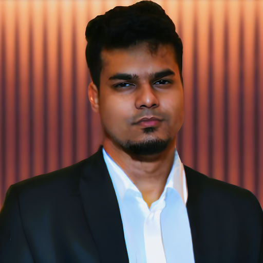
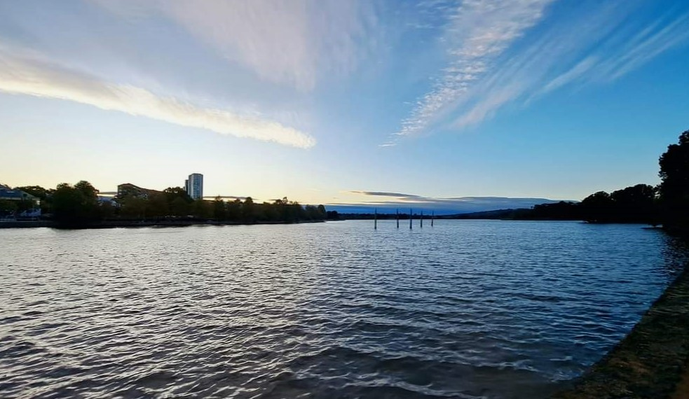
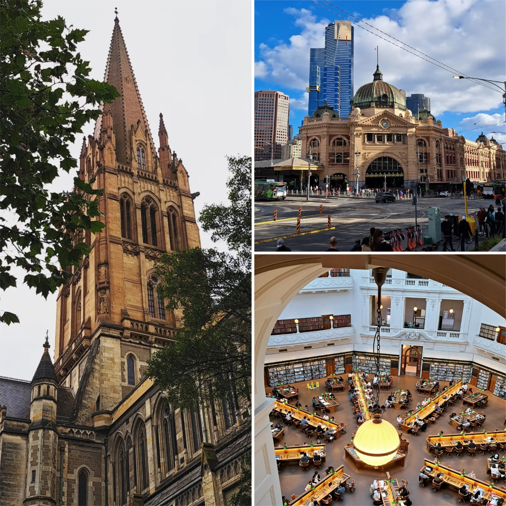
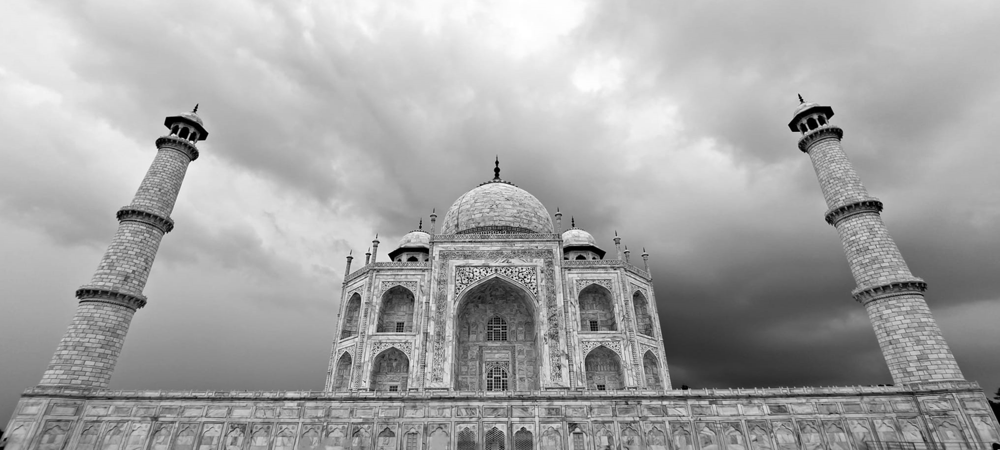

Journal
- September 2023: I have started as a Graduate Research officer in Quantitative AI systems at Research School of Management, ANU.
- July 2023: I have started tutoring for Advanced Control Systems and Network Optimization.
- June 2023: Bachelor Thesis finally published!
- Apr 2023: PhD Committee has been formed now.
- Mar 2023: Started my PhD with the School of Computing, ANU.
- Dec 2022: Graduated First Class (third in the major cohort) from ANU!
Publications
My preprints are uploaded on ArXiv connected to ORCID.
Thesis
Journal Publications
- J1. Analysis of closed‑loop inertial gradient dynamics, 2023
- First authored by myself and my supervisor Ian Petersen as a journalised culmination of the work undertaken in C1 and C2. Published in the Asian Journal of Control in the Special Edition for Robotics, Control and Systems, 2023 .
Conference Publications
- C2. Analysis of closed‑loop inertial gradient dynamics, 2022
- First authored by myself and my supervisor Ian Petersen as an extension to C1. Published in the 13th Asian Control Conference, 2022 and was highly recommended by the committee to the Asian Control Conference.
- C1. Analysis of closed‑loop inertial gradient dynamics, 2022
- First authored by myself and my supervisor Ian Petersen outlines the non-classical Whiplash Inertial Gradient Dynamics and Algorithm. It was published in the Australian and New Zealand Control Conference, 2021 and we won the High commendation award for it.
Presentations
Experiences
Experiences
- Graduate Research Officer, September 2023 - Present (Supervision of Dr Priya Muthukannan, Research School of Management)
-
-
Quantitative and Mixed Qualitative data analysis of Fintech industries and signal generation using expert recommender systems
- Head Automation Intern at Calcutta Electric Supply Corporation, Kolkata, August 2021 - February 2022 (Supervision of Mr. Arindam Sanyal, Deputy General)
-
- Headed a team of 17 (5 junior interns and 12 on-site workmen) that developed and integrated a self-heal mechanism for the Ring Main Unit-based Power System at the Chitpur hospital substation during the second wave of the Coronavirus outbreak.
- Supervised the live installation and configuration of HVDC circuit breakers from the substation to multiple grids.
- Redesigned breaker relay circuits to control breakdown voltage using feedback stabilizers on a live network using SCADA.
- NLP Research Intern at Decimal Point Analytics, India, 2021 (Supervision of Mr Paresh Sharma, MD)
-
- Developed and fine-tuned a financial metadata database for direct RoBERTa question answering. This involved using advanced natural language processing techniques to improve the accuracy and efficiency of transformer models.
- I organized client meetings for product re-evaluation and quality control. This involved coordinating with multiple clients to gather feedback on our product and implementing changes to improve its performance.
- Private Equity Research Intern at Laxmi Vilas Bank, India, 2020 (Supervision of Parthasarathi Mukherjee, Ex-CEO)
-
- I developed a portfolio optimization method using a Competitive Neural Network.
- I renegotiated contract term limits with the banking tribunal.
- I delegated with multiple teams for the deployment of an algorithm in day trading.
Undergraduate Research Projects
Over my undergraduate degree I have taken multiple research projects as a part of my training and coursework and some independently. The following few standout among them:
- Neural Network for inverting high dimensional functions, 2022 (Supervisor: Distinguished Prof. Emeritus Richard Hartley, FAA, School of Computing, ANU)
-
- In this project, we took a Neural Network perspective to realize the feasibility of inverting differentiable functions within a closed sample range for non-linear processes. We found that such a phenomenon is restricted to an RMSE hit rate of 72% and requires computationally intensive positional encoding and transfer decoding.
- We discovered that neural networks could not compute inverses of functions unless the embedded function is locally invertible for a smooth manifold. We thus proved inconsistency in the network over its global invertibility. This is strong evidence that NNs are feed-forward only local approximators of smooth functions.
- We developed the TIMER algorithm, that the total complexity of the algorithm to determine the net computational effort to reach the minimum using an iteration bound is equal to the number of oracle calls times the differentiation steps on a Basys FPGA output counter using real-time wallclock and operation response.
- We proved our hypothesis that the numerical floating point accuracy dictates the total complexity of the lower bound.
- Closed Loop Inertial Gradient Dynamics, 2021 (Supervisor: Prof. Ian Petersen, FAA, ANU)
-
- In this honours project, we investigated the Nesterov ODE developed using symplectic integration by Prof. Su, Boyd and Candes and devised feedback optimization methods that led to the discovery of the Whiplash inertial gradient dynamical system.
- This state-of-the-art algorithm is deterministic and is exponentially faster than Nesterov-like classical methods for convex functions. We also used control principles to establish universal Lyapunov-based methods to predict rates of convergences of accelerated inertial methods for high-resolution ODE-based approaches.
- Passive Radar Signal Processing, 2020-21 (Supervisor: V. Venkateshwara Rao, Ex-Director, ARDE, Defence Research and Development Organisation, 2020)
-
- In this project, we developed a Kalman filter-based method to select with a few iterations, using the ambiguity function of a returning radar signal, the matched filter of the radar signal. This method allowed us to optimize the next burst to reduce the uncertainty measure.
- We used an FPGA-based multi-processor interfacing setup for long-range noisy radar signal processing. Certain aspects of this research were classified.
- Bifurcation analysis using Optical Signal Processing through Viscoelastic Graphene Sheet, 2019 (Supervisor: Prof. Gargi Chakraborty, School of Advanced Sciences, Vellore Institute of Technology)
-
- In this project, we found a model using parametric state estimations for the viscoelastic graphene sheet’s optical response under stress. We aimed to explain the irreproducibility of the Bubnov–Galerkin treatment results in the presence of optical excitations through the medium.
- We successfully explained the bifurcations using a non-linear excitation term & experimentally verified the regression for larger gains using the noisy Brueller model.
Teaching
- Casual Sessional Academic CECS, ANU for ENGN4628 and ENGN8224: Advanced Control Systems and Network Optimization, Semester 2, 2023
- Casual Sessional Academic CECS, ANU for ENGN4625: Power Electronics and Systems, Semester 2, 2022
- Tutor, Cluey Learning, Advanced Mathematical Methods, May-September, 2022
- Seasonal Teaching Volunteer for Higher Secondary Mathematics to the Friends of Tribal Society, Kolkata Chapter Birhor Tribe, Purulia, West Bengal, 2017‑2018
Reviewership
- Reviewer of Australia and New Zealand Control Conference, 2021 for IEEE Xplore
- Reviewer of Asian Control Conference, 2022 for IEEE Xplore
- Reviewer of Asian Journal of Control, 2022 for Wiley Publishers
Contact
Kindly direct all official intimations to my Academic mail.
Phone Number
Office Address
B322, Brian Anderson Building
115 North Road, The Australian National University
Acton, ACT-2601, Australia
Bio

I am a University Research Scholar pursuing my PhD in the Intelligent Systems Cluster within the ANU School of Computing at the College of Engineering, Computing and Cybernetics, Australian National University since March, 2023. I am currently working on Uncertainty analysis using Generative Models for Robotic applications. My supervisory panel consist of the following academics:
- Dr. Jing Zhang (Primary Supervisor)
- Dr. Dylan Campbell (Associate supervisor)
- Dr. Rahul Shome (Associate supervisor)
Education
I am a recent graduate of the Australian National University in the College of Engineering, Computing and Cybernetics. I majored in Mechatronics Systems, with minors in Electronic Communication Systems and Mathematics with a First Class Honours, third in my cohort (Major branch). My honours thesis was under the supervision of Prof. Ian Petersen titled: On the Control theory of closed loop inertial dynamics. My Bachelor thesis was essentially stapled and culminated as the journal paper J1. I transferred to ANU from the Vellore Insitute of Technology, India with scholarship.
Secure transcripts are available here , upon request by mail.
Research Interests
My research interests are mainly centred around Autonomous Systems and Optimization research. Some topics that I look forward to exploring are:
- Developing active vision techniques for field robotics and generative models for human-robot interaction (HRI).
- Compositional Generative modelling of visual representation with augmented data
- Multiview-Multi-objective triangulation using swarm UAVs.
- Applying Bayesian optimization to non-smooth sparsely sampled non-convex functions.
- Min-Max games in optimal policy learning for Multi-player constrained environments.
I have recently started flirting with PAC learning and aspects of Radmaecher Complexity, seems too dry for now but will let know if it is something permanent.
About Me
Origins
I was born on 18th December, 1998. My preferred (non-official) first name is Rudra (রুদ্র), which means the same thing as my official name in Bengali (শুভ্রাংশু সেখর ভট্টাচার্য) and my preferred pronouns are he/him. I am originally from West Bengal in India. I grew up in a suburb of Kolkata. I completed my schooling in Kolkata at the Bharatiya Vidya Bhavan. After a gap year in volunteering work and preparing for competitive exams, I joined the Vellore Institute of Technology on a 2+2 International Transfer Program for my undergraduation and transferred with a scholarship to the Australian National University in 2020. I did my first few semesters remotely amidst the COVID pandemic.
My sources of inspiration are my grandfathers. My maternal grandfather Er. Manimoy Banerjee (1935-2019) was a Chartered Mechanical engineer and researcher in Guess Keen Williams, Kolkata. He worked on various consulting projects in developing India in the 1960s in Vishakapattanam and Kashmir. My paternal grandfather Dr Sudhangshu Sekhar Bhattacharjee (1927-2009) was an agricultural economist in India and an academic between 1950-1990. He was the founder of Barasat Night College, his home converted into an evening college for integrating underrepresented and economically disadvantaged peoples into the mainstream education system. Other family members in academia include my father Dr Sitangshu Sekhar Bhattacharjee, Ex-Head of the Department of Chemistry City College, Kolkata. I am also distantly related to pioneering statistician Prof. Anil K. Bhattacharyya (known for his work in the area of probability measures).
Personal Interests
I am an avid enthusiast of International Relations, Politics and Law. I used to be associated with the South Indian MUN circle during my time at VIT and specialised in economic committees as Switzerland though my best performance was as People's Republic of China in late 2020 after which I retired from MUNs. I had also chaired multiple MUNs. My current interests include hunting for forgotten books and international music from the early 40s to the late 70s.
I am a self-proclaimed film buff. Among my frugal attempts at understanding world cinema, I am particularly interested in temporally discontinuous films. I feel it necessitates one of the highest forms of directorial acumen. Thus, Christopher Nolan is my favourite director of all time. But I also enjoy films by Tarantino, Kubrïc, Hitchcock and Copolla. In Indian cinema, Anurag Kashyap, Ritwick Ghatak, Tarun Majumdar, Satyajit Ray and Vishal Bharadwaj are my favourites. My favourite film actors are Christopher Waltz, Edward Norton, Benedict Cumberbatch, Michael Fasbender and Helena Bonham Carter.
I am also a fan of nihilistic poetry. Charles Bukowski (though I must admit his misogyny poised some of his work) and Jaun Elia are my favourites. My favourite writers are Alexander Dumas, Ruskin Bond, Dan Brown, Richard Dawkins, Bertrand Russel and Franz Kafka. I listen to all sorts of music but modern mixes of western classical and Indian classical are my favourites. Some of my favourite artists are The Piano Guys, Gustavo Santaolalla, Estas Tonne, Ludovico Einaudi, Nina Simone, Kishore Kumar and Nusrat Fateh Ali Khan.
Gallery
A gallery of images of places I visited or memories.





